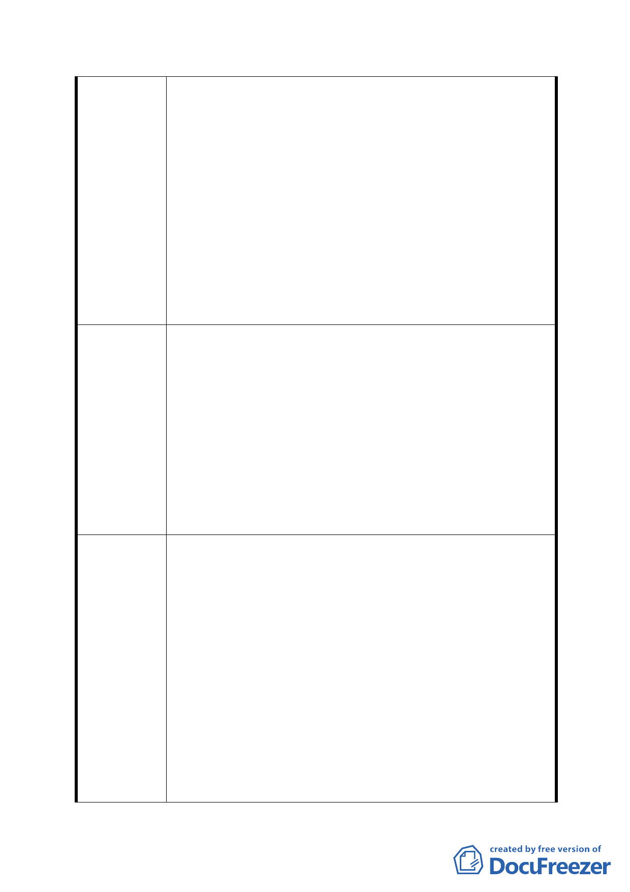

年間依據編定用途進行交易的民眾而言，好像有引君入
甕，坑殺百姓的嫌疑，政府可以扮演這種角色嗎？
2. 官民關係是：我信賴政府、政府保護百姓的信賴保護原
則，20年內的信任←→今日貴局的規劃，請問保護何在？
3. 看規劃：似乎有為軍事機關用地淨空周邊的精神，軍事
需求得由周邊民眾如此犧牲來承擔嗎？亦或應該由政府
承擔？
4. 貴局97年5月22日北市都規字第09732325700號復函之說
明三謂：「本案高中預定地屬公共設施用地，後續檢討變
更原則作公共設施使用為優先」，何以遽然有保護區的規
劃？
以坡度超過 30°的理由而必然成為保護區，為何作為學校用
地的時候就不考慮這個問題？
1. 政府在照顧眾民之時，也應該兼顧不損及原所有者的權
益。
2. 本於無損善良百姓權益下，先延續97年7月前之規劃辦理
徵收，自然地形或軍事需求之規劃造成的負擔由政府承
擔。
建 議 辦 法 3. 提供市民行的需求本來就是政府的責任，本區內長久供
行之道路部分，應由相關單位擇期明訂徵收補償。
4. 72地號平坦部分請規劃為住3，以降低損失程度。
5. 基地東北側規劃為保護區內已建有階梯並設路燈部分，
此區已初具公園性質，請併入公園規劃，執行徵收。
6. 誠懇籲請規劃諸公，有降低地主損失程度之念。
（一） 本案專案小組本於對當地民眾意見的重視，包括防
洪設施的評估及軍營的搬遷等，均要求市府重新檢
討防洪設施設置地點及協調國防部。本案雖有部分
附近居民陳情反對防洪調節池的設置，但係基於要
求軍營整體搬遷重新規劃；另一部分提出反對意見
之陳情民眾係位於坡度超過 30％之山坡地之地主，
第五次專案小組
該土地係屬法規上限制開發之土地，故在考量防洪
審查結論
安全的急迫性及軍營搬遷無法一步到位的現況下，
且本案業經都市發展局多次協調國防部並修正計畫
內容，除以下幾點請都市發展局及工務局水利工程
處於本案提大會時補充說明外，其餘依都市發展局
本次所提修正方案續提大會審議。
1. 本案多次討論內容所提滯洪池、防洪調節池、貯留
池經水利工程處說明係指相同功能之防洪設施，故
- 13 -